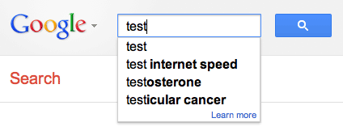

| ======= |
>>>>>>> bf75cc338ef797dacbe154780df9697b562e4cac
|
What are the borders of a Google Autocomplete ? |
|
While searching on google, when you start typing your request, the interface suggests you some words to complete your research : this is google autocomplete.
Based on what people usually ends up looking for, after typing the first few letters of their request, Google Autocomplete is good at guessing what we are seeking.
Every country has its own suggestions, for instance, while searching for “how to” :
While everybody can easily question one of the googles, Google-Borders.com aims at providing a visualization of ALL country specific google search engines suggestions. This way, you can have fun discovering unknown differences or similarities between a great number of countries. |  This open service, with available raw data and source code, was brought to you by : @mazieres @cybunk @sizeof from Fabelier Hackerspace, a lab to make things, for the fun of it. |